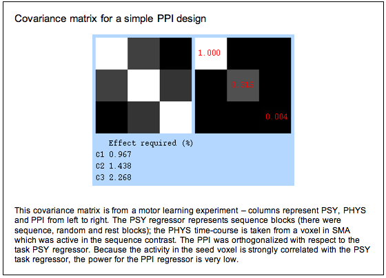
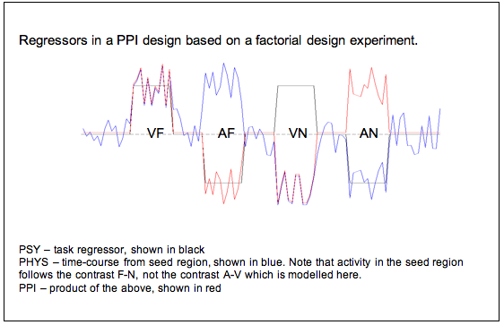

PPI Issues
This document brings up some issues with PPI that the analysis guys and I are concerned about. However, note that lots of papers using PPI have been published, and there are always issues with every method, so you shouldn’t get too bogged down with these worries. In fact, if you are the bogging-down-in-worry type, better stop reading now.
What exactly does PPI model?
A PPI effect is a task-specific change in correlation between areas, which cannot be explained simply by a shared effect of task. What neural processes could generate such a correlation?
One answer is probably unmodelled task related variance For example, say that in the hypothetical maze-navigation experiment above, we have modelled navigation using a block design (navigate/passive travel/rest modelled as boxcars). What if PFC and HPC (independently) only really get involved in navigation when you turn a corner? Then the true shape of the psychological variable is rather more phasic than the boxcar we modelled, and thus there is unmodelled task-related variance shared between the PFC and HPC which could be driving both areas. This would lead to a spurious PPI.
A second type of unmodelled variance would be learning effects – for example in a sequence-tapping task, performance might improve over the course of the scanning session, and if this effect is not modelled, it could also drive a spurious PPI.
Note that whilst the task model we have chosen is ‘partialled out’ of the data, the unmodelled task variance is not – so in effect the less well our model fits the data, the bigger the risk of a spurious PPI…
PET approach vs. fMRI approach
A PPI approach has been used with PET in many papers (in fact, more than use PPI with fMRI). In a PET experiment we only have one data point for each task block. This leads to a subtle difference between PET-PPI and fMRI-PPI; in fMRI PPI the ‘detailed’ time-course of activation (with on data point per TR) is used and indeed in SPM a deconvolution algorithm is employed to make this possible.
It seems to me that, if our data are modelled with a block design, then a box-car-like PPI regressor could be used which disregards time-course information on a scale faster than the block: after all, if we are proposing that the brain processes of interest follow a box-car-like shape, interactions of interest should also be box-car-like. I think using this approach would improve the interpretability of PPI data, not least because a poor fit of the boxcar shape cannot lead to a spurious PPI (as described above) in this case.
Deconvolution
In order to generate a PPI regressor, we essentially find the product of the task regressor and the time-course from the seed region. There is a problem with this in that the time course of ‘activity’ in the seed region is actually the time-course of the BOLD response and will therefore be shifted in time (by the haemodynamic lag) with respect to the task regressor. One way to bring these two into line is to convolve the task regressor, but not the physiological time-course, with an HRF; this is the approach taken in FSL. Another more complicated approach would be to try to deconvolve the physiological time-course, to try to find the underlying neuronal time course, and multiply this with the not-convolved task regressor; this is the approach taken in SPM.
The reason for deconvolving is that the shape or lag of the HRF may be different between brain regions, and if no deconvolution is applied, the PPI analysis can be biased towards areas with a similar shaped/delayed HRF. However, this is only really important for event-related designs; for block designs the two methods are roughly equivalent.
A detailed discussion of the deconvolution issue is given in:
Gitelman DR, Penny WD, Ashburner J, Friston KJ (2003)
Modeling regional and psychophysiologic interactions in fMRI: the importance of hemodynamic deconvolution.
Neuroimage 19: 200-7.
When should you (not) use PPI?
In theory, PPI can be used with any experimental design. However, in practice you are unlikely to see a significant effect in most  experimental designs. The reason for this is that, to avoid the confounds described above, you have to include the main effects from which you derived your interaction variable in the GLM. But because the psychological, physiological and interaction variables are now strongly correlated, the design lacks power. You can see this from the covariance matrix below – we would need a signal change of over 2% associated with the interaction term to see a significant effect.
experimental designs. The reason for this is that, to avoid the confounds described above, you have to include the main effects from which you derived your interaction variable in the GLM. But because the psychological, physiological and interaction variables are now strongly correlated, the design lacks power. You can see this from the covariance matrix below – we would need a signal change of over 2% associated with the interaction term to see a significant effect.

Literature review of PPI
The PPI method was originally reported in 1997 in the following paper:
Friston, Buechel, Fink, Morris, Rolls and Dolan (1997)
Psychophysiological and modulatory interactions in neuroimaging
Neuroimage 6: 218-229
… and has been implemented as a function in SPM since SPM2. A search in the Science Citation Index revealed that of 189 papers citing the original Friston paper, of which 40 were fMRI studies in which PPI had been used, of which 15 were published by people at the FIL and most of the rest had at least one author at the FIL.
If these numbers really reflect the number of studies in which PPI has been used ‘successfully’ (that is, in which there was a significant result), then the number is surprisingly low, given that there is a PPI button in the SPM GUI and given the number of posts about PPI on the SPM mailing list (240). Further, about twice as many papers have been published using PPI with PET as with fMRI. Applying some Bayesian inference based on the proportion of PET to fMRI papers in the literature and the proportion of people likely to be clicking the PPI button to those who got a paper out of it, I have to suspect that this method does not work very successfully with fMRI data. This is probably because of the orthogonality issue described above in non-factorial designs.
Factorial designs
PPI is supposed to work better with factorial designs. The reasons for this are described in Friston (1997), which I quote here:
Factorial Designs (Friston et al, 1997) Psychophysiological interactions generally depend on factorial experimental designs, wherein one can introduce neurophysiological changes in one brain system that are uncorrelated with the stimulus or cognitive context one hopes to see an interaction with. We make this point explicit, suggesting that this is another example of the usefulness of factorial experiments: Although it is possible to test for psychophysiological interactions in almost any experimental design, the use of factorial designs ensures that any psychophysiological interactions will be detected with a fair degree of sensitivity. This is because the activities in the source area, the psychological context, and the interaction between them, will be roughly orthogonal and therefore one can use the first two as confounds with impunity. The converse situation, in which only one stimulus or cognitive factor has been changed, may render the activity in the source area and changes in the factor correlated. If this is the case, there is no guarantee that the interaction will be independent of either and its effect may be difficult to detect in the presence of the ‘‘main effects.’’
This makes sense in some ways, but to me it seems strange – surely the only reason this works is that you are including psychological variables which differ from the contrast of interest, which would after all be the interaction contrast 1, -1/3, -1/3, -1/3 ?
In other words, if we have a factorial design the psychological, physiological and interaction regressors will be relatively orthogonal. Say we are doing an experiment on memory in different sensory modalities, and we have a 2x2 design with factors A vs. V (auditory and visual) and F vs. N (familiar vs. novel stimuli). Then we might define a seed voxel for our PPI which is active in the GLM contrast familiar-novel (perhaps in the medial temporal lobe), and analyse the PPI in the visual condition (perhaps we think visual cortex will show a stronger functional connection with medial temporal lobe in the familiar condition). Then our regressors will be as follows:
- PSY: task contrast visual-auditory (shown in black below)
- PHYS: time-course from our voxel in medial temporal lobe– this is more active in the familiar condition than the novel condition (shown in blue below)
- PPI: the product of PSY and PHYS.
Because the contrast we used to select the seed region is not the same as the contrast we are interested in in the PPI analysis, our regressors are now looking a lot more orthogonal see Figure below).
